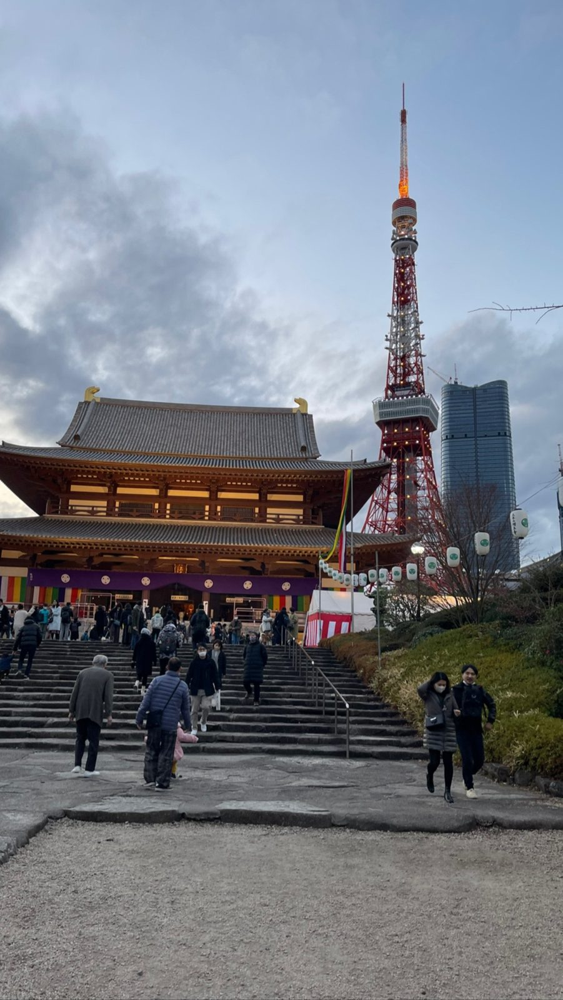

新年、明けましておめでとうございます。
新年、明けましておめでとうございます。

本年もどうぞ、よろしくお願いいたします。
2023年、今年は自分の中でも成長の年にしていきたいと思っております。
そんな２０２３年の自分の目標は、
・スタッフが一人ひとりの成長に合わせたスタッフ育成の教育強化
・スタッフの活躍ができるように、バックアップ強化。
・もっとスタッフが幸せになれる経営ができるように、学びができるように、自分自身の経営者のレベルアップ
を目標に計画。
（今年から、裏方に回る準備が加速していく気がする、、、。）
これまでの経営者として、2022年までの２〜３年。コロナの影響もあり、なかなか経営や美容師としての学びが少なくなってしまった時期。
いろいろ、アトリエ・ナインでも変化することもあり、
今までは
がむしゃらに漠然としたいい経営をしないといけないという理想を掲げてしまい、自分で勝手に不安を抱いてしまい、その場その場で軌道修正してきた経営でした。
でも結局その分の代償も大きく、相当メンタルもやられることも多かったのです。
ただこの２〜３年の中での時間がとても自分の中では大きな変化が生まれた時期。
特に去年の2022年は、会社にとっても自分にとっても大きな変化が生まれた年。
ここ2年くらいで、きちんと事業に計画性を持たせることができ始め、
必要なこと、必要でないことの振り分け、
会社にとってのプラスやマイナス、
やりきることの大切さ、
今のスタッフの未来、今後出会えるスタッフの未来
本当にこの2022年のタイミングで大きく修正できたことが、今後のnineの未来を大きく輝かせてくれることとなる時間があったことがとても嬉しく、感謝の時期だったかなと今は改めて思える1年でした。
その考えを存分に落とし込みができる2023年の幕開け。
ワクワクしかない2023年でもっと自分が成長できますように。
株式会社 アトリエ・ナイン 代表 菅野
2015年9月、福島県福島市に《hair atelier nine》をオープン。
福島市で髪質改善、ヘッドスパサロンを展開しており、２０１９年１０月には待望の２店舗目をオープン。
オープンしてから３年目に法人化。オープン７年目に突入。サロンの労働環境改善のため社員の週休２日を実現。サロンワーク８時間で残業なし。スタッフに働きやす環境整備をもっとうに経営を心がけております。
福島市の美容室の求人をお探しの美容師さんぜひお話だけでもいかがでしょうか？？
求人に少しでも興味のある方はお気軽にお問い合わせください。
サロン見学や求人の概要の問合せ、相談など、なんでもお待ちしております。
LINE：@jnp9523c
までお問い合わせください